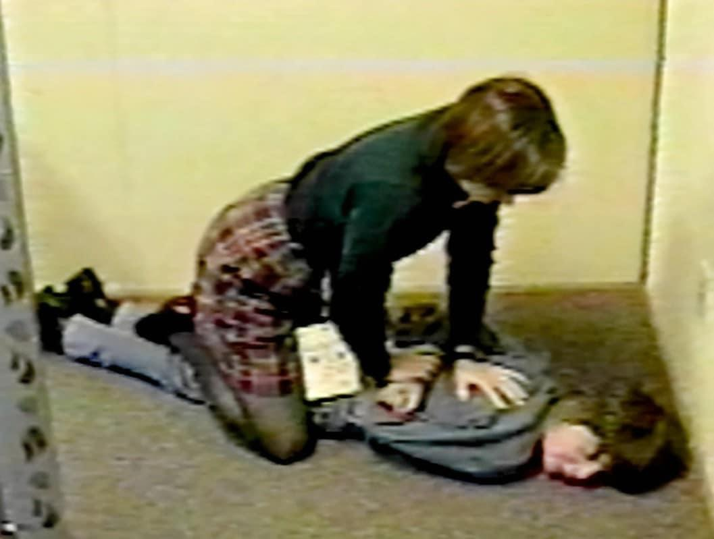
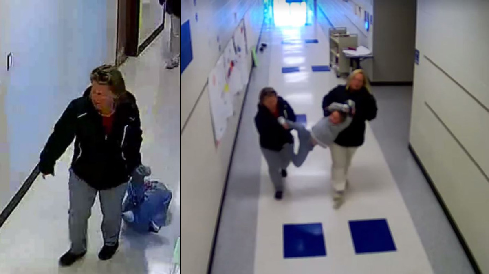
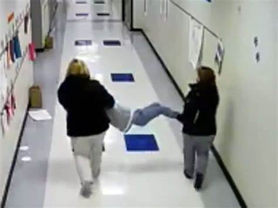
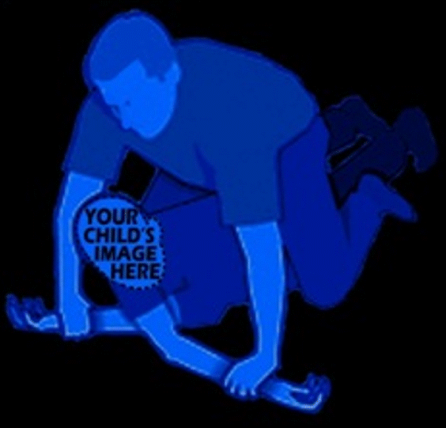

This website was made to expose civil rights abuses in Aiken County's Public School System
Everyone saw it happen to me and they chose to do nothing!
I did NOTHING to deserve it other than voicing my opinion.



Now what if this was your child? Would it change anything?
People make choices. You have a choice. You can ignore it all- write it off as crazy, or you can create change and be a voice to those who can't be heard.
WHERE DID THESE ABUSES TAKE PLACE?:
There are three locations.1830 Chukker Crk Rd, Aiken, SC 29803
100 Bears Rock Rd, Aiken, SC 29801
224 Kershaw St NE, Aiken, SC 29801
CNN reports on the use of prison cells to detain students against their will in schools.
Student hangs himself in school seclusion room.
A mother files a lawsuit for Aiken County Public Schools Detaining and holding her son in a cell.
A mother files a lawsuit for Aiken County Public Schools Detaining and holding her son in a cell.
A mother files a lawsuit for Aiken County Public Schools Detaining and holding her son in a cell.
A mother files a lawsuit for Aiken County Public Schools Detaining and holding her son in a cell.
A mother files a lawsuit for Aiken County Public Schools Detaining and holding her son in a cell..
Seclusion rooms in schools do more harm than good, experts say
Students Are Still Being Put in School Seclusion Rooms
National Data Confirm Cases Of Restraint And Seclusion In Public Schools
How Some Schools Restrain Or Seclude Students: A Look At A Controversial Practice
Solitary Confinement is Appallingly Common In Public Schools